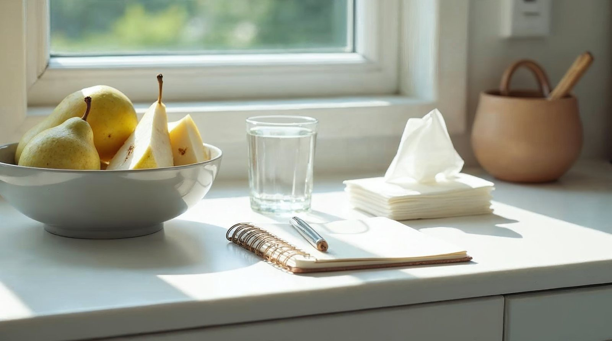
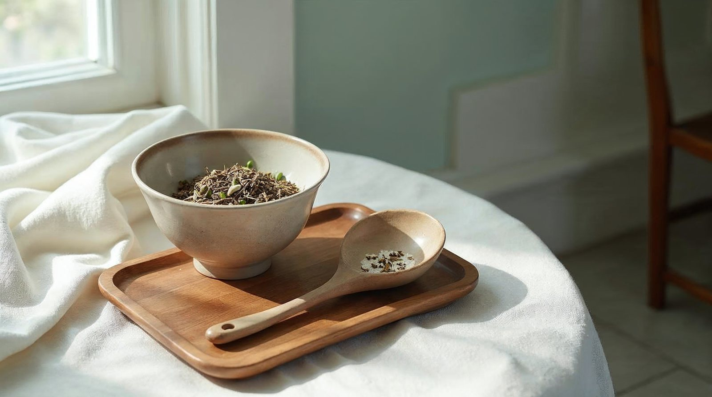
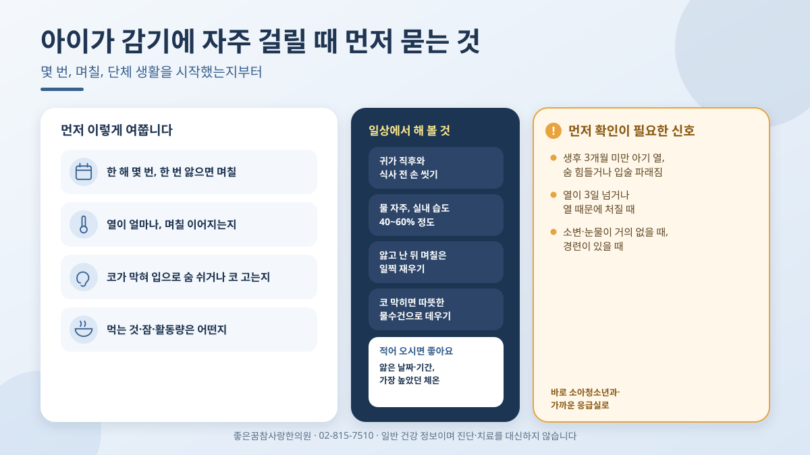

이종호 한의사 감수좋은꿈참사랑한의원 대표원장 (한의사 면허번호 19769)발행 2026-11-26 · 수정 2026-11-26
이 글의 차례
새벽 두 시, 아이 방에서 쌕쌕거리는 숨소리가 들립니다. 이마에 손을 얹어 보고, 이불을 다시 덮어 주고, 체온계를 찾아 서랍을 뒤집니다. 지난주에 겨우 콧물이 멎었는데 또 시작입니다. 내일 어린이집은 보내도 될지, 회사에는 뭐라고 말해야 할지 머릿속이 복잡해집니다.
아이가 감기를 달고 산다면 먼저 세 가지를 정리해 보시길 권합니다. 한 해에 몇 번 앓는지, 한 번 앓으면 며칠 가는지, 그리고 어린이집이나 유치원 같은 단체 생활을 언제 시작했는지입니다. 이 세 가지만 알아도 지금이 흔히 지나가는 시기인지, 더 살펴볼 때인지 가늠이 됩니다.
다만 열이 사흘 넘게 이어지거나, 숨쉬기 힘들어하거나, 아이가 축 처져 잘 놀지 않는다면 이야기가 다릅니다. 그때는 한의원 진료를 기다리지 말고 바로 소아청소년과로, 밤이거나 숨이 가쁘다면 가까운 응급실로 가셔야 합니다.
진료실에서 보호자분들께 이런 말씀을 자주 듣습니다. 우리 애만 유난히 약한 것 같다고요. 다른 집 아이는 멀쩡한데 왜 우리 아이만 한 달에 두 번씩 아픈지, 혹시 내가 뭘 잘못 먹이고 있는 건 아닌지 자책하는 분도 계십니다.
형제가 있는 집이라면 한 아이가 낫자마자 다른 아이가 앓기 시작해, 한 달 내내 누군가 아픈 것 같다는 말씀도 하십니다. 그 고단함은 겪어 본 분만 압니다.
아이가 아프면 보호자의 잠도 함께 사라집니다. 일과 돌봄 사이에서 미안한 마음을 양쪽으로 안고 버티셨을 겁니다. 그 시간을 먼저 알아 드리고 싶습니다. 자주 아픈 것은 보호자의 잘못이 아닙니다.
왜 아이는 감기에 자주 걸릴까요
아이들의 면역은 바이러스를 하나씩 만나며 배워 갑니다. 감기를 일으키는 바이러스는 종류가 아주 많아서, 처음 만나는 바이러스마다 한 번씩 앓으며 지나가는 것이 자연스러운 과정입니다.
그래서 어린 아이가 한 해에 여러 번 감기에 걸리는 것은 드문 일이 아닙니다. 특히 어린이집이나 유치원을 처음 다니기 시작한 첫해에는 거의 달마다 앓는 것처럼 느껴지기도 합니다. 단체 생활을 시작한 지 한두 해가 지나면 차츰 덜해지는 경우가 많습니다.
한의학에서는 아이를 '어린 나무'에 비유하곤 합니다. 자라는 힘은 크지만 아직 뿌리와 껍질이 여려, 바깥 기운의 변화에 쉽게 흔들린다고 보지요. 특히 소화의 힘과 몸을 지키는 겉의 기운을 함께 살핍니다.
잘 먹고 잘 소화해야 몸을 지킬 힘이 만들어진다고 봅니다. 그래서 감기가 잦은 아이에게 밥과 대변 이야기를 함께 묻습니다. 조금만 움직여도 땀을 많이 흘리고 그 땀이 식으며 오싹해하는 아이라면, 겉을 지키는 기운이 아직 여린 쪽으로 보고 옷차림과 땀 관리를 함께 이야기합니다.
감기를 자주 부르는 생활의 조각들
잠이 부족한 시기에 더 자주 앓는다는 보호자가 많습니다. 늦게 자고 일찍 일어나 등원하는 날이 이어지면 아이 몸은 회복할 시간이 모자랍니다. 학원이 늦게 끝나는 큰아이도 마찬가지입니다.
입맛이 없어 몇 숟가락 먹고 마는 아이, 간식으로 끼니를 대신하는 아이는 앓고 난 뒤 회복이 더딘 경우가 많습니다. 밥을 잘 안 먹는 아이 이야기는 아이가 밥을 몇 숟가락 먹고 안 먹으려 할 때는 무엇을 먼저 살피나요?에 따로 적어 두었습니다.
건조한 실내, 땀을 흘린 채 찬바람을 맞는 일, 놀이터에서 돌아와 손을 씻지 않고 간식을 먹는 습관도 겹칩니다. 하나하나는 사소하지만 모이면 아이가 견디는 힘을 조금씩 깎습니다.
그냥 잦은 감기일까, 더 살펴볼 때일까
자주 앓는다는 사실만으로 걱정할 필요는 없습니다. 제가 더 눈여겨보는 것은 앓는 횟수보다 앓는 모양과 그 사이의 아이 모습입니다.
- 앓고 나서 금방 원래대로 잘 먹고 잘 논다면 흔히 지나가는 시기일 가능성이 큽니다.
- 한 번 앓으면 2주 넘게 콧물과 기침이 이어지거나, 낫기 전에 또 걸리기를 되풀이한다면 생활 리듬과 코 상태를 더 살핍니다.
- 감기 끝에 귀가 아프다고 하거나, 누런 콧물과 기침이 열흘 넘게 이어지면 중이염이나 부비동염 확인이 필요합니다.
- 키와 몸무게가 또래보다 늘지 않거나, 폐렴처럼 깊은 감염을 여러 번 앓았다면 소아청소년과에서 더 자세히 확인받으셔야 합니다.
감기가 지나간 뒤에도 코가 막혀 늘 입을 벌리고 있다면, 그 자체가 다음 감기를 부르기도 합니다. 입으로 숨을 쉬면 목이 마르고, 아침마다 칼칼한 기침이 납니다. 코를 고는 아이라면 아이가 자면서 코를 골고 입으로 숨 쉴 때는 어떻게 살피나요?도 함께 보세요.
비염과 감기를 헷갈리는 경우도 많습니다. 열 없이 맑은 콧물과 재채기가 아침저녁으로, 또는 계절이 바뀔 때마다 되풀이된다면 감기보다 비염 쪽을 떠올려 봅니다.
환절기 등굣길 코막힘은 가을 환절기에 아이가 등굣길마다 코가 막히고 훌쩍일 때는 어떻게 살피나요?에 정리해 두었습니다.
감기가 지나간 뒤 일주일을 어떻게 보낼까요
저는 감기를 앓는 며칠보다 그 뒤 일주일을 더 눈여겨봅니다. 열이 내리면 아이는 금세 뛰어놀고 싶어 하고, 보호자도 밀린 일정을 따라잡고 싶어지지요. 그런데 이 일주일을 어떻게 보내느냐에 따라 다음 감기가 오는 간격이 달라진다는 보호자가 많습니다.
열이 내린 뒤에도 한동안은 입맛이 덜 돌아오고, 잠이 얕고, 쉽게 짜증을 내는 아이가 많습니다. 몸이 아직 회복하는 중이라는 신호입니다. 이 시기에는 새로운 활동을 더하기보다 잠과 끼니를 먼저 제자리로 돌려놓는 것이 좋습니다.
소화가 편한 음식을 조금씩 자주 주고, 억지로 많이 먹이려 하지 않습니다. 감기 뒤 입맛이 없는 아이는 보통 며칠에 걸쳐 천천히 돌아옵니다. 2주가 지나도 잘 먹지 않거나 몸무게가 줄었다면 진료 때 꼭 말씀해 주세요.
예를 들면 이런 경우입니다
실제 어느 아이의 이야기가 아니라, 진료실에서 자주 보는 모습을 바탕으로 그려 본 장면입니다.
예를 들어 어린이집을 다니기 시작한 첫 가을부터 한 달에 두 번꼴로 콧물과 기침을 하는 경우가 있습니다. 열은 하루 이틀이면 내리고 잘 노는데, 콧물이 마를 새가 없습니다. 이럴 때는 잠드는 시각과 귀가 뒤 손 씻기, 실내 습도부터 함께 살펴봅니다.
예를 들어 감기는 나았다는데 밤마다 입을 벌리고 자고 아침이면 목이 칼칼하다며 기침하는 초등학생도 있습니다. 코막힘이 오래 남아 있는지 보고, 코골이가 심하거나 숨을 멈추는 것 같다면 이비인후과 확인을 먼저 권합니다.
예를 들어 앓고 나면 몇 주씩 밥을 몇 숟가락만 먹고, 배가 아프다는 말을 자주 하는 아이도 있습니다. 이때는 감기보다 소화와 대변, 간식 습관을 먼저 여쭙고, 키와 몸무게가 잘 늘고 있는지 함께 확인합니다.

스스로 점검해 보세요
- 지난 여섯 달 동안 감기를 다섯 번 넘게 앓은 것 같다
- 한 번 앓으면 콧물과 기침이 2주 넘게 이어진다
- 감기가 나은 뒤에도 입을 벌리고 자거나 코를 곤다
- 밤 10시가 넘어 잠드는 날이 많다
- 아침을 거르고 등원·등교하는 날이 많다
- 앓고 난 뒤 입맛이 한참 돌아오지 않는다
- 자면서 땀을 흠뻑 흘리거나, 대변이 들쭉날쭉하다
점수를 매기려는 목록은 아닙니다. 표시한 줄을 보여 주시면 그 줄부터 이야기를 시작하겠습니다. 아이마다 약한 고리가 다르니까요.
먼저 이렇게 여쭙니다
보호자께서 아이를 가장 오래, 가장 가까이에서 보셨습니다. 그래서 저는 아이에게 묻기 전에 보호자의 기억부터 듣습니다.
- 지난 여섯 달 동안 몇 번쯤 앓았나요? 한 번 앓으면 며칠 가나요?
- 열은 며칠 동안, 얼마나 올랐나요? 열이 내린 뒤 아이는 바로 잘 놀았나요?
- 코가 막혀 입으로 숨을 쉬거나 코를 고나요? 누런 콧물이 오래가나요?
- 몇 시에 자고 몇 시에 일어나나요? 자다가 자주 깨거나 땀을 흠뻑 흘리나요?
- 아침밥은 먹고 가나요? 대변은 며칠에 한 번, 어떤 모양인가요?
- 소아청소년과에서 받은 진단과 복용한 약은 무엇인가요?
아이에게도 직접 묻습니다. 어디가 불편한지, 코가 막혀서 답답한지, 밥이 맛있는지. 아이의 대답은 짧지만 그 안에 보호자도 몰랐던 이야기가 숨어 있을 때가 있습니다.
일상에서 먼저 해 볼 수 있는 것
아이 몸을 단단하게 하는 특별한 비법은 없습니다. 대신 매일 되풀이되는 작은 습관이 쌓입니다. 하나씩만 붙여 보세요.
- 귀가하자마자, 그리고 밥 먹기 전에 손 씻기를 놀이처럼 함께 하기
- 미지근한 물을 자주 마시게 하고, 실내 습도를 40~60% 정도로 맞추기
- 앓고 난 뒤 며칠은 평소보다 30분 일찍 재우고, 바깥 일정을 줄이기
- 땀을 흘린 뒤에는 바로 마른 옷으로 갈아입히고, 찬바람을 정면으로 맞지 않게 하기
- 코가 막히면 미지근하게 데운 물수건으로 코 주변을 잠시 데워 주기(보호자 손목 안쪽에 먼저 대어 뜨겁지 않은지 확인)
- 아침밥을 아주 조금이라도 먹고 등원하기, 간식은 정해진 시간에만
열이 날 때 해열제를 쓸지, 어떻게 쓸지는 소아청소년과나 약사의 안내를 따라 주세요. 아이의 나이와 몸무게에 맞춰 정해야 하는 일이라 이 글에서는 따로 적지 않습니다.
무엇보다 아이가 아플 때 보호자도 지칩니다. 할 수 있는 만큼만 하셔도 충분합니다. 못 지킨 날은 다음 날 다시 하면 됩니다.

한의원에서 함께 살필 수 있는 경우
- 감기는 나았다고 들었지만 코막힘과 입 호흡이 오래 남는 경우
- 앓고 난 뒤 입맛이 돌아오지 않고 잠이 얕아진 경우
- 낫기 전에 또 걸리기를 되풀이하며 쉽게 지치는 경우
- 자주 앓으면서 배가 아프다고 하거나 대변 상태가 들쭉날쭉한 경우
좋은꿈참사랑한의원에 아이와 처음 오시면 먼저 보호자의 이야기를 충분히 듣고, 지금 열이나 숨쉬기 문제가 있는지부터 확인합니다. 소아청소년과 진료가 먼저라고 판단되면 그 자리에서 말씀드립니다.
그다음 아이에게 무엇을 할지 쉬운 말로 설명하고 맥을 짚습니다. 아이의 손목은 작고 맥도 빨라서, 짧게 여러 번 나누어 보기도 합니다. 필요하다고 판단되면 혀와 배도 살핍니다. 잠과 식사, 대변, 땀은 보호자께 함께 여쭙습니다.
이렇게 살핀 내용을 바탕으로 생활에서 먼저 바꿀 것과, 침이나 한약 상담이 필요한지를 보호자와 함께 정합니다. 침은 아이의 나이와 마음 상태를 보고 신중히 정하고, 아이가 무서워하면 억지로 하지 않습니다.
한약은 아이의 나이와 체중, 지금 드시는 약을 확인한 뒤에 상의합니다. 원내 탕전실에서 대표원장이 약재를 검수해 달입니다. 다시 오시면 지난번 이후 몇 번 앓았는지, 코와 잠은 어땠는지부터 이어서 여쭙습니다.
이렇게 기록해 오시면 상담이 쉬워집니다
아이가 아플 때는 정신이 없어 기억이 흐려지기 쉽습니다. 휴대폰 메모에 한 줄씩만 남겨 두셔도 큰 도움이 됩니다. 체온계 화면을 사진으로 찍어 두거나, 아이가 기침하는 소리를 짧게 녹음해 오셔도 좋습니다. 진료실에서는 정작 기침을 안 하는 아이가 많거든요.
- 앓기 시작한 날과 다 나은 날, 가장 높았던 체온과 열이 이어진 날수
- 소아청소년과에서 들은 진단과 처방받은 약 이름
- 코막힘, 입 호흡, 코골이가 있었던 밤
- 잠든 시각과 일어난 시각, 밤에 깬 횟수
- 입맛과 대변의 변화, 어린이집이나 학교를 쉰 날
같은 반에 감기가 돌았는지, 가족 중 먼저 앓은 사람이 있었는지도 적어 두시면 흐름을 이해하는 데 도움이 됩니다. 어린이집 생활과 감기 이야기는 어린이집에 다니면서 감기를 달고 사는 아이는 어떻게 살피나요?에서 더 보실 수 있습니다.
이런 증상은 먼저 확인이 필요합니다
- 생후 3개월 미만 아기의 열
- 숨쉬기 힘들어하거나 숨이 가쁘고, 갈비뼈 사이가 쑥쑥 들어가는 경우, 입술이 파래지는 경우
이런 신호가 있으면 한의원보다 가까운 병원이나 응급실을 먼저 찾으세요.
밤새 이마를 짚어 보던 손, 출근길에 몇 번이고 어린이집에 전화했던 마음을 압니다. 아이는 앓으면서도 자랍니다. 그 사이 아이 몸의 리듬을 조금씩 다져 갈 수 있도록 함께 살피겠습니다. 다음에 오시면 지난번 이후 몇 번 앓았는지, 밤에 코는 어땠는지부터 여쭙겠습니다.

여쭙는 것
- 지난 여섯 달 동안 몇 번쯤 앓았나요? 한 번 앓으면 며칠 가나요?
- 열은 며칠 동안, 얼마나 올랐나요? 열이 내린 뒤 아이는 바로 잘 놀았나요?
- 코가 막혀 입으로 숨을 쉬거나 코를 고나요? 누런 콧물이 오래가나요?
생활에서 해 볼 것
- 귀가하자마자, 그리고 밥 먹기 전에 손 씻기를 놀이처럼 함께 하기
- 미지근한 물을 자주 마시게 하고, 실내 습도를 40~60% 정도로 맞추기
- 앓고 난 뒤 며칠은 평소보다 30분 일찍 재우고, 바깥 일정을 줄이기
한의원에서 함께 살필 것
- 감기는 나았다고 들었지만 코막힘과 입 호흡이 오래 남는 경우
- 앓고 난 뒤 입맛이 돌아오지 않고 잠이 얕아진 경우
- 낫기 전에 또 걸리기를 되풀이하며 쉽게 지치는 경우
먼저 확인이 필요한 신호
- 생후 3개월 미만 아기의 열
- 숨쉬기 힘들어하거나 숨이 가쁘고, 갈비뼈 사이가 쑥쑥 들어가는 경우, 입술이 파래지…
한눈에 보는 표
| 구분 | 핵심 |
|---|---|
| 여쭙는 것 | 지난 여섯 달 동안 몇 번쯤 앓았나요? 한 번 앓으면 며칠 가나요? 열은 며칠 동안, 얼마나 올랐나요? 열이 내린 뒤 아이는 바로 잘 놀았나요? |
| 생활에서 해 볼 것 | 귀가하자마자, 그리고 밥 먹기 전에 손 씻기를 놀이처럼 함께 하기 미지근한 물을 자주 마시게 하고, 실내 습도를 40~60% 정도로 맞추기 |
| 한의원에서 함께 살필 것 | 감기는 나았다고 들었지만 코막힘과 입 호흡이 오래 남는 경우 앓고 난 뒤 입맛이 돌아오지 않고 잠이 얕아진 경우 |
| 먼저 확인이 필요한 신호 | 생후 3개월 미만 아기의 열 숨쉬기 힘들어하거나 숨이 가쁘고, 갈비뼈 사이가 쑥쑥 들어가는 경우, 입술이 파래지는 경우 |
자주 묻는 질문
감기에 자주 걸리면 몸이 약한 건가요?
단체 생활을 시작한 첫해에는 감기가 잦은 것이 흔합니다. 앓는 횟수보다 앓고 난 뒤 잘 먹고 잘 노는지, 키와 몸무게가 잘 늘고 있는지를 함께 봅니다. 걱정되는 점이 있으면 소아청소년과 확인도 함께 받아 보세요.
아이도 침을 맞나요?
아이의 나이와 상태, 마음을 보고 신중하게 정하며 보호자와 먼저 상의합니다. 아이가 무서워하면 억지로 하지 않고, 침 없이 생활 관리부터 시작하기도 합니다.
감기약을 먹는 중에 한약을 먹여도 되나요?
먹이기 전에 지금 드시는 약을 모두 알려 주세요. 아이의 나이와 체중, 약을 확인한 뒤에 시기와 방법을 상의합니다. 소아청소년과 약은 처방한 의사와 상의 없이 끊지 않습니다.
열이 나는데 한의원에 먼저 가도 되나요?
열이 나는 아이는 소아청소년과 진료를 먼저 권합니다. 생후 3개월 미만의 열, 숨이 가쁘거나 처지는 모습이 있다면 바로 가까운 응급실로 가세요.
좋은꿈참사랑한의원은 재진 때 지난번 이야기부터 이어서 여쭙니다. 진료시간과 예약은 오시는 길에서 확인하세요.
어디서 상담받을 수 있나요?
좋은꿈참사랑한의원은 서울 동작구 만양로2길 2 신성빌딩 3층·5층(서울 동작구 상도동, 7호선 상도역 3번 출구 근처)에 있습니다. 한의사 3명(이종호 대표원장, 조영기 수석진료원장, 정원영 진료원장)이 진료합니다. 진료시간은 평일 09:30~20:00(점심 13:00~14:00), 토·일·공휴일 09:30~15:00이며, 방문 전 전화로 확인을 권합니다. 예약은 네이버 예약, 카카오톡 상담, 전화 02-815-7510로 받습니다.
이 글은 일반적인 건강 정보이며 개인의 진단이나 치료를 대신하지 않습니다. 증상이 있거나 복용 중인 약이 있다면 진료를 통해 확인하세요. 치료 효과는 개인마다 다를 수 있습니다.
작성 기준: 일반적으로 알려져 있는 건강 정보를 참고해 정리했습니다(대표원장 감수). 증상 기록은 1~2주 동안 하루 1회, 비슷한 시간에 적어 오시면 지난 상태와 비교하기 쉽습니다.